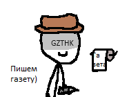

Как бы не было противно это осознавать, ранее "ГАЗЕТЧИКИ" были заядлыми раками "СКРЫТЫЕ", и до появления скрипта они частенько долбили мозг олдфагов и бесконечно срали. Но все, как говорится, кончается. В конце 2021 года произошла глобальная перепалка между "СКРЫТЫМИ" и Литовцем, в итоге которой Дедпет чуть не забанил всех представителей отряда по чистке фекалий. Данный срач стал предзнаменованием чего-то большего.
26 декабря 2021 года произошла самая что ни на есть не эпичная срачельня, в ходе которой все стало наиболее хорошо. Произошла некая реформа, благодаря которой отряд "СКРЫТЫЕ" превратился в добропорядочную организацию "ГАЗЕТЧИКИ".
Позже все бывшие раки стали активно работать над газетой, чему как-никак порадовался Аллих (румайности теперь не надо делать!). И прямо на Рождество вышел пилотный выпуск газеты.
А дальше пошло-поехало.
Некоторые олдфаги полюбили нашу газету. И вы можете полюбить, если почитаете! Все проекты нашей организации заархивированы прямо здесь, и прочитать их вам никто не помешает. Просто зайдите на страницу "Архив" и начните читать.
Ах да, вот наша тема на форуме румине. Все анонсы и новости нашей организации именно там.
Наша команда
Спасибо всем людям, перечисленным ниже! Без них я бы не справился!
Старший Состав
- Litovetz - владелец, администратор.
- vovanhurcane - главный редактор.
- Смит - бывший администратор, ныне неактивен.
Основной Состав
- Айтипедик 2.0 - бывший дизайнер сайта, ныне уволен.
- Nothing-no - бывший журналист, ныне неактивен.
Спонсоры
- cat1967 - креативные люди.
- Sab - спонсор.
- DXYVAD - спонсор, дизайнер сайта, уважаемый гость.
- Зоррета - спонсор, уважаемый гость.
- greggonate - спонсор, уважаемый гость.
- Allexx - спонсор, уважаемый гость.
- dedepete - спонсор, уважаемый гость.
Черный Список
Спасибо вам всем!
P.S. Если хотите стать участником нашей организации, прочтите данную информацию.